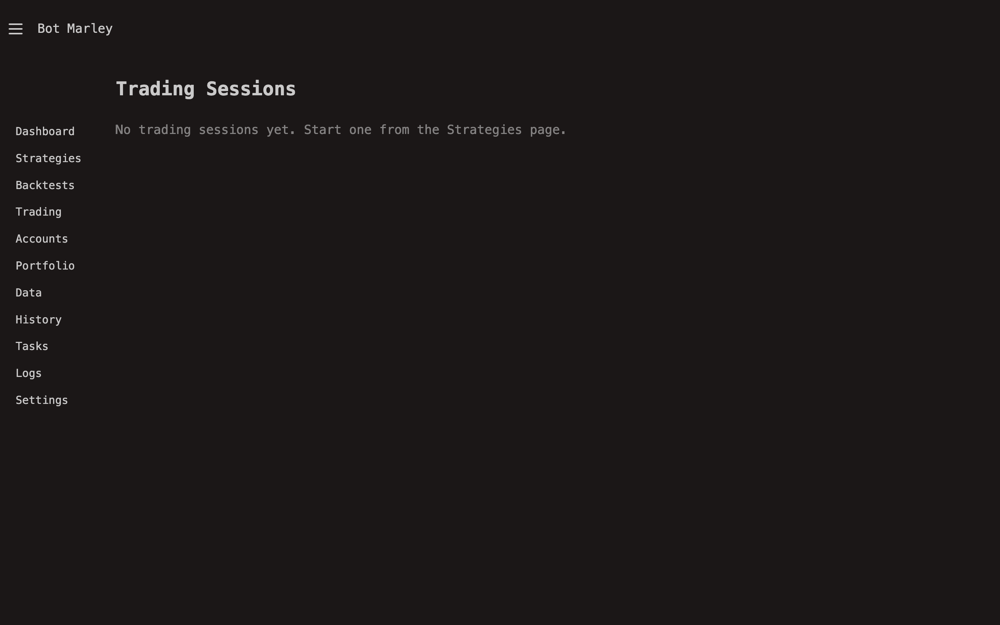

Live Trading
Live trading is where your strategy meets the real market. Instead of replaying historical candles, Botmarley connects to your exchange (Kraken or Binance) in real time, fetches new candle data as it becomes available, evaluates your strategy triggers, and executes trades -- either simulated (Paper) or with real money (Binance account).
Live trading with a Binance account uses real money. Orders placed through the Binance API are real, irreversible market orders. Make sure you have thoroughly backtested and paper-traded your strategy before connecting it to a real exchange account. Start with small amounts.

Paper vs. Real Trading
Botmarley supports two modes of live trading, determined by which account you select when starting a session:
| Mode | Account type | Orders | Risk |
|---|---|---|---|
| Paper trading | Paper account | Simulated locally. No exchange API calls for orders. | Zero. No real money involved. |
| Real trading | Binance account | Placed on Binance via the signed REST API. | Real. Funds can be gained or lost. |
In both modes, the trading engine behaves identically: same candle fetching, same indicator calculation, same trigger evaluation, same action execution logic. The only difference is what happens when an action fires:
- Paper mode: The engine updates the simulated portfolio in memory and in the database. No exchange order is placed.
- Real mode: The engine sends a market order to Binance via the signed REST API, waits for confirmation, then updates the session state with the actual fill price and amount.
Always test a new strategy in Paper mode first. Run it for at least a few days to confirm it behaves as expected with live market data before switching to a real Binance account.
How the Trading Engine Works
The live trading engine runs as an async background task for each active session. Here is the cycle it repeats:
flowchart TD
A["Wait for poll interval<br/>(default: 60 seconds)"] --> B["Fetch latest candle(s)<br/>from Exchange REST API"]
B --> C["Append to candle buffer<br/>(rolling window of 500)"]
C --> D["Rebuild indicator cache<br/>(RSI, SMA, MACD, etc.)"]
D --> E{"Evaluate strategy<br/>triggers"}
E -- "Trigger fired" --> F["Execute action<br/>(Paper or Binance order)"]
E -- "No match" --> G["Update progress store<br/>(price, PnL, candle count)"]
F --> G
G --> H{"Check control<br/>channel"}
H -- "Continue" --> A
H -- "Pause" --> I["Enter paused state<br/>(wait for resume/stop)"]
H -- "Stop" --> J["Graceful shutdown<br/>(save state to DB)"]
Poll Interval
The engine fetches new candles at a configurable interval, defaulting to 60 seconds. This aligns with 1-minute candle data from the exchange. Each poll:
- Requests the latest OHLCV candle(s) from the exchange REST API (Kraken or Binance, based on the account type).
- Deduplicates against the existing buffer (avoids processing the same candle twice).
- Appends new candles to a rolling buffer (capped at 500 candles to manage memory).
Candle Buffer and Indicators
The engine maintains a rolling buffer of the most recent candles. After appending new data, it rebuilds the indicator cache. This ensures that indicators like RSI(14) or SMA(50) always have enough historical context to produce accurate values.
Trigger Evaluation
The engine uses the exact same evaluation code as the backtest engine. This means:
- Technical indicator triggers (RSI < 30, SMA crossover, etc.) work identically.
- Price change triggers, position-based triggers, and trailing stops all behave the same.
- Multi-position logic,
max_countlimits, and all other strategy features apply.
Order Execution
When a trigger fires:
- Paper account: Portfolio balances are updated in memory. The action is recorded in the database with status "executed."
- Binance account: A spot market order is sent to Binance via the signed REST API. The engine records the exchange's fill price and amount. If the order fails (insufficient balance, API error, etc.), the action is recorded with status "order_failed."
The Full Flow
Putting it all together, here is the complete data flow from market to database:
flowchart LR
Exchange["Exchange API<br/>(Kraken or Binance)"] -->|"REST: fetch candles"| Engine["Trading Engine"]
Engine -->|"Calculate"| Indicators["Indicator Cache<br/>(RSI, SMA, BB, MACD)"]
Indicators -->|"Evaluate"| Triggers["Strategy Triggers"]
Triggers -->|"Fire"| Execute["Execute Action"]
Execute -->|"Paper: update locally"| DB["PostgreSQL<br/>(session state)"]
Execute -->|"Binance: place order"| Exchange
Engine -->|"SSE events"| Browser["Your Browser<br/>(live updates)"]
Key Concepts
- Session. A single run of a strategy against a pair using a specific account. Each session has its own state: balance, PnL, action history, candle count.
- Progress store. An in-memory map of session progress, updated every poll cycle. The UI reads from this via SSE for real-time updates.
- Control channel. Each session has a
tokio::sync::watchchannel that the server uses to send pause, resume, and stop commands. The engine checks this channel after every poll cycle. - Strategy snapshot. When a session starts, the current strategy TOML is copied and stored with the session. This means editing the strategy later does not affect running sessions.